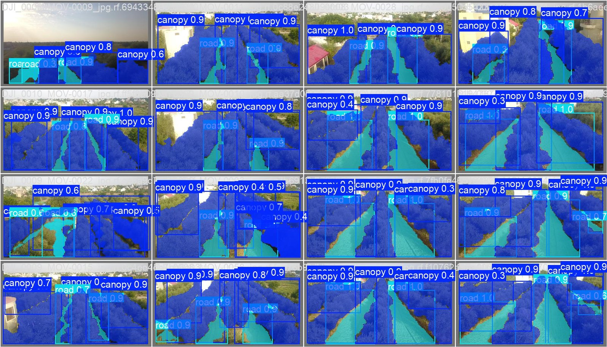
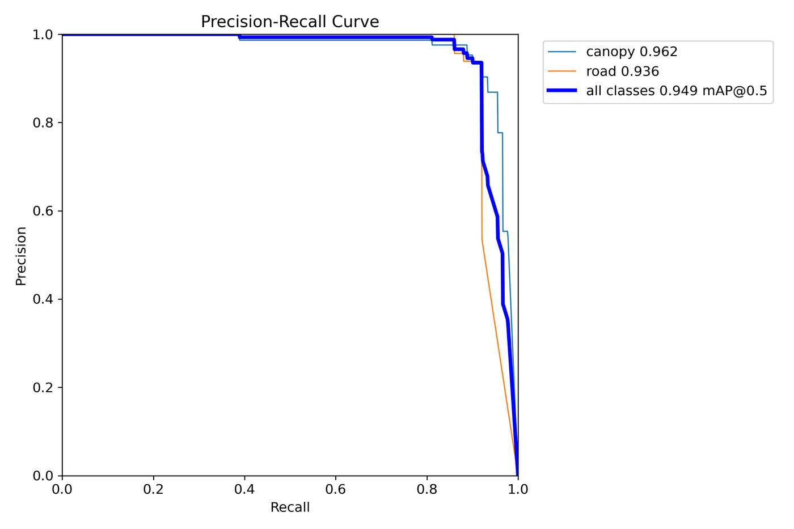
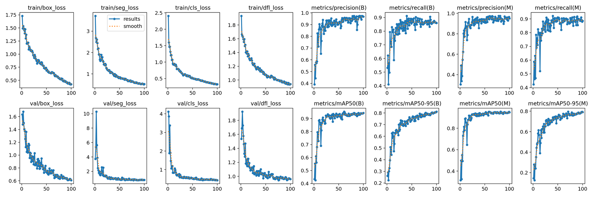

Abstract
This paper introduces a monocular vision-driven strategy for treeline tracking in orchards, capable of maintaining stability under moderate wind disturbances. In structured agricultural environments where trees are planted in parallel rows, accurate autonomous navigation is critical. Departing from conventional grid-based or path-following techniques, this research leverages instance segmentation to detect and track individual treelines with high precision. A curve-fitting algorithm constructs a navigation trajectory whose offset and slope relative to the image center determine yaw and roll adjustments, while maintaining constant pitch. The proposed approach enhances UAV stability and navigational accuracy in orchard settings, contributing to the advancement of automated agricultural systems.
Keywords: UAV Navigation, Computer Vision, Treeline Tracking, Precision Agriculture, Visual Servoing, Instance Segmentation
Key results
Demo

Method
A forward-facing camera, tilted 45° downward, views the orchard from above the canopy, which avoids the occlusion and collision problems of flying below it. Each frame passes through a pipeline that runs entirely onboard the UAV:
- Instance segmentation: YOLOv11 segments each treeline canopy, trained on a custom olive-orchard dataset (290 images; 255 train, 20 validation, 15 test).
- Soft-NMS: Gaussian Soft-NMS keeps closely spaced treelines as separate detections instead of merging them, which standard NMS tends to do where rows converge.
- Tracking: a Kalman filter follows the selected treeline across frames, riding out brief occlusions.
- Navigation line: the tracked mask is cleaned with morphological opening, reduced to its largest component, and a line is fitted through its row-wise centre points. This was the most stable of the four fits tested (whole-mask line, centre-point line, cubic and quadratic B-splines).
- Control: the line's horizontal offset from the image centre sets the roll command and its slope sets the yaw command, both exponentially smoothed; pitch is held constant and commands go to the PX4 autopilot.
Results
Table 1: Instance Segmentation Performance on the Custom Orchard Dataset
| Model | Box mAP50 | Box mAP50-95 | Mask mAP50 | Mask mAP50-95 |
|---|---|---|---|---|
| YOLOv11 | 95.5 | 78.5 | 96.5 | 71.4 |
| YOLACTEdge | 73.17 | 46.52 | 75.06 | 59.51 |
| YOLACT++ | 69.69 | 42.58 | 72.63 | 54.36 |
YOLOv11 was selected for deployment and runs with TensorRT on the Jetson Orin NX at 17 FPS. Field tests over the olive orchards of Pilani showed the quadcopter generating and following navigation lines autonomously, staying stable under light wind.



Code
The repository contains the inference pipeline with an interactive interface, Kalman tracking, post-processing and control modules, training and TensorRT export scripts, a Jetson Orin environment, and the trained canopy segmentation checkpoint.
git clone https://github.com/Ritabrata-Chakraborty/Monocular-Vision-Based-UAV-Navigation-for-Orchard-Monitoring.git cd Monocular-Vision-Based-UAV-Navigation-for-Orchard-Monitoring pip install -r requirements.txt python scripts/run_inference.py --ui --video 0
Citation
@unpublished{kishore2025orchard,
title = {Path Planning of Low-Altitude UAV for Tree Canopy Tracking
and Orchard Monitoring},
author = {Kishore, Kaushal and Chakraborty, Ritabrata},
note = {Manuscript},
year = {2025},
url = {https://ritabrata-chakraborty.github.io/Monocular-Vision-Based-UAV-Navigation-for-Orchard-Monitoring/}
}